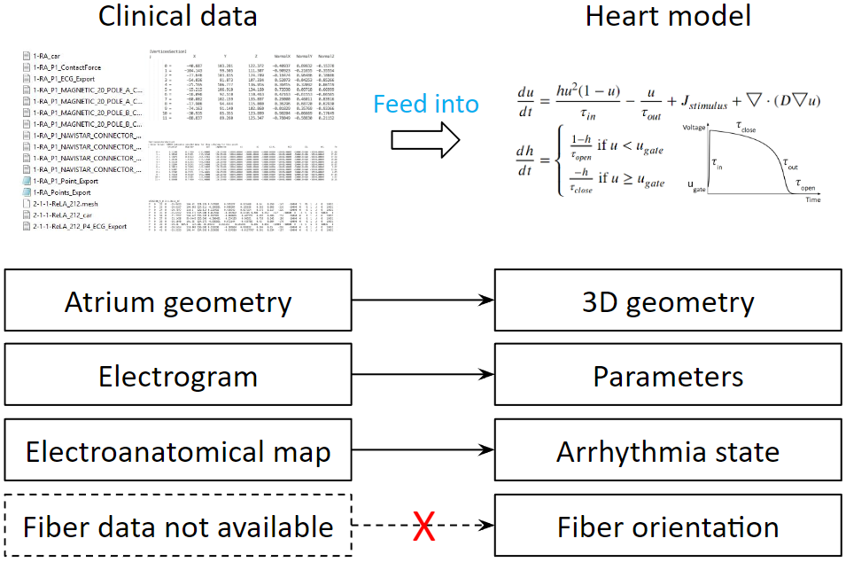
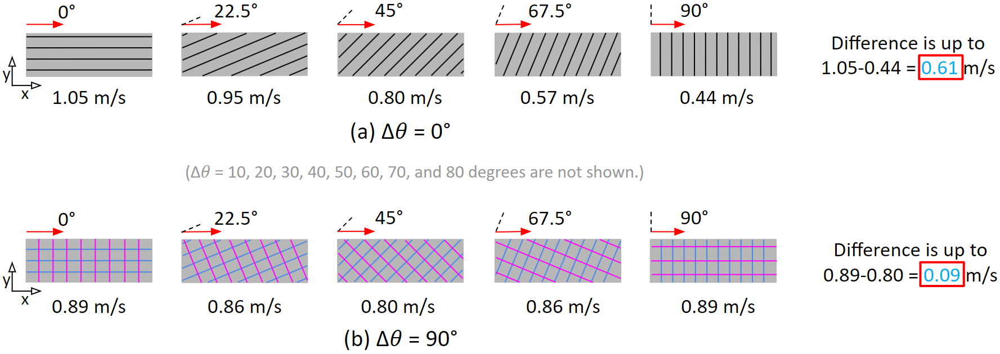
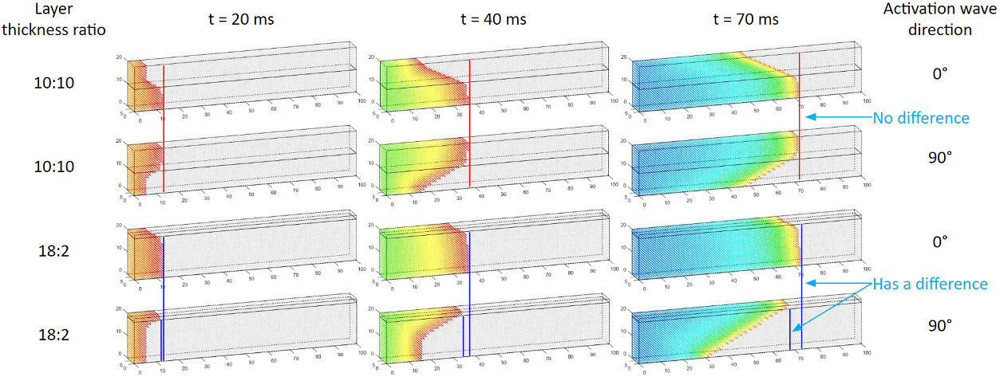
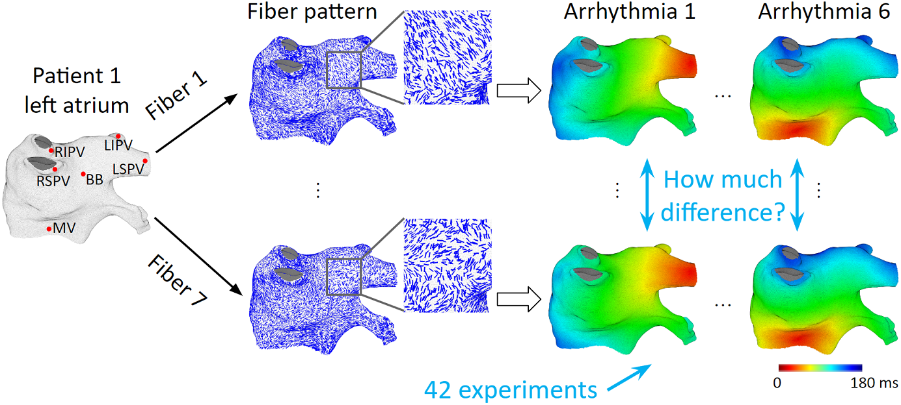
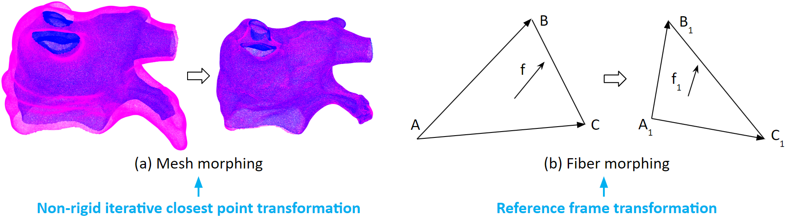
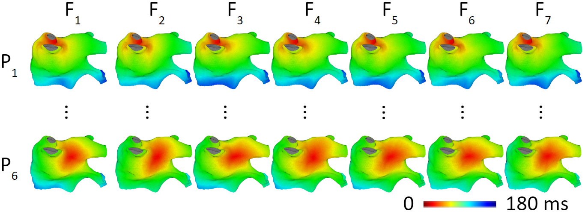
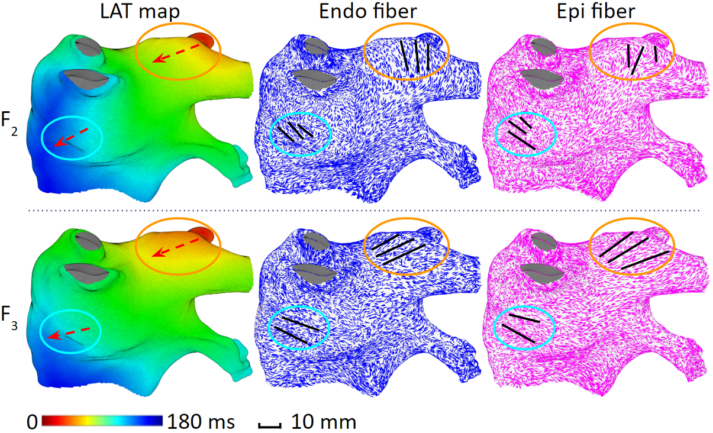
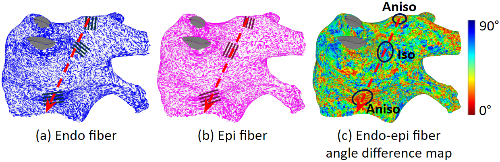
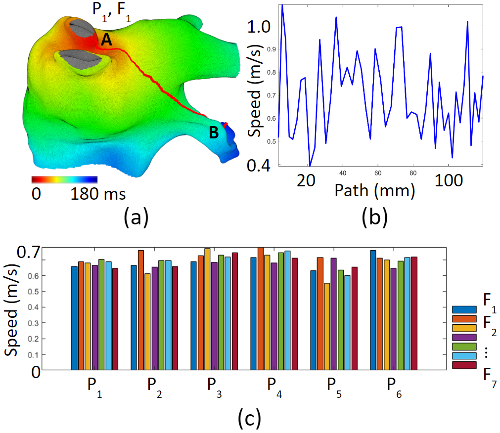

Overview
Our heart model needs to be patient-specific. Therefore, we process clinical data and feed them into the heart model, so that we can tune the heart model’s parameters. We have clinical data that can be transformed into the components of the heart model. But there is one heart model’s components that is not available: the myocardial fiber orientations. We don’t want to introduce new equipment or new procedures to the current ablation system. Therefore, we would like to find a way to compensate for the lack of fiber data. To do that, we need to first learn the effects of fiber on activation patterns.

We ran experiments on slab tissue. We varied the fiber angle in between endocardium and epicardium, we also varied the activation wave direction, creating a total of 50 scenarios. The results show that fiber has a stronger effect on conduction velocity when endocardium and epicardium fiber orientations are the same.

We also found that the thickness ratio in between endocardium and epicardium can affect conduction velocity. As shown in these two sets of experiments, we see that an imbalanced thickness ratio results in a difference of the activation wavefront locations.

The observations of the slab tissue experiments show that fiber orientations could have a large effect on activation patterns. However, the left atrium is different from a slab tissue. Fiber organizations in the left atrium are much more complex. The question we have now is: Whether observations from the slab experiments still hold true in the left atrium. To investigate fiber effects on activation patterns on the left atrium, we utilize an ex-vivo fiber database. We register 7 different patient’s fiber data onto the same left atrium. And run the same set of arrhythmias to observe the differences in activation patterns.

To register fiber data from one mesh to another mesh. We first apply a non-rigid iterative closest point transformation to the mesh. As illustrated here, the magenta mesh is morphed into the shape of the blue mesh. Then we apply a reference frame transformation to the fiber vectors.

Now, let’s look at the results of the arrhythmia simulations with different fibers. The figures in the same row have the same arrhythmia, the difference is in the fiber data. We can see that fiber does not result in large differences in activation patterns. The average activation time difference is 7.8 ms. Or 4.3% of the activation time range.

When we take a closer look, we find that fibers do affect local activation patterns. If activation direction is perpendicular to fiber orientation, conduction is slower. If activation direction is parallel to fiber orientation, conduction is faster.

However, fiber’s local effect does not accumulate. Because fiber organizations in the left atrium vary a lot. As shown in figure (c) below, for an activation travels along the red arrow, its speed can increase and decrease, but the overall speed will not change much. We called this the cancellation effect.

Figure (a) below shows a path from point A to point B. The conduction speed along this path increases and decreases due to different fiber organizations. But the average conduction speeds are similar regardless of different fiber organizations.

Publications
- Fiber Organization Has Little Effect on Electrical Activation Patterns During Focal Arrhythmias in the Left Atrium
He, Jiyue; Pertsov, Arkady M.; Cherry, Elizabeth M.; Fenton, Flavio H.; Roney, Caroline H.; Niederer, Steven A.; Zang, Zirui; Mangharam, Rahul
IEEE Transactions on Biomedical Engineering, 2023, Volume 70, Issue 5, Pages 1611-1621.
Link to Paper
Contributors
Jiyue He, Arkady M. Pertsov, Elizabeth M. Cherry, Flavio H. Fenton, Caroline H. Roney, Steven A. Niederer, Zirui Zang, Rahul Mangharam
Citation
@ARTICLE{9954897,
author={He, Jiyue and Pertsov, Arkady M. and Cherry, Elizabeth M. and Fenton, Flavio H. and Roney, Caroline H. and Niederer, Steven A. and Zang, Zirui and Mangharam, Rahul},
journal={IEEE Transactions on Biomedical Engineering},
title={Fiber Organization Has Little Effect on Electrical Activation Patterns During Focal Arrhythmias in the Left Atrium},
year={2023},
volume={70},
number={5},
pages={1611-1621},
keywords={Organizations;Action potentials;Computational modeling;Three-dimensional displays;Optical fiber testing;Numerical models;Solid modeling;Cardiac electrical activation propagation;Focal arrhythmia activation pattern;Fiber organization;Heart modeling;Left atrium;Patient-specific},
doi={10.1109/TBME.2022.3223063}}